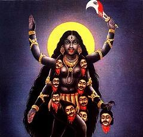

Religion og likestilling:
Når skal bokreligionene be om tilgivelse?
Sjøl de mest bibel- og koranliberale mennesker må vel innse at kvinnesynet både i de store religioner som kristendom, islam og hinduisme, og i de utallige “små” religionene som springer ut fra de samme kilder, er sterke hindre for likestilling mellom kjønnene.
De mest skrifttro vil sikkert også ha det slik, bejubler det, finner det riktig. Det er kanskje til og med for enkelte den viktigste praktiske leveregelen religionen gir dem; at de fritt og med sin hannguds velsignelse kan gjøre sine koner, søstre og enhver annen kvinne de møtte måte i livet til tjenere og undersåtter og ofre! Mennesker som alltid skal lyde og aldri lydes, tjene og aldri tjenes, eller som det sterkt oppskrytte Nye Testamente sier det: Den dårligste mann er mer verd enn den beste kvinne.
De eldste religionene har jo blitt til i kamp mot kvinnestyrte religioner med kvinnelige guddommer som Isis, Astarte og Kali, og når vi den dag i dag sjøl på radikalt og endatil feministisk hold snakker om å tjene “Gud eller Mammon” så skriver faktisk uttrykket seg fra ei tid da Gudinnas templer både var rikere og hadde større innflytelse enn de stakkars israelske fåregjeternes guddom kunne håpe på å få… Det var rett og slett et påbud om å velge mellom Gud og Gudinne, noe de fleste vanlige mennesker den gangen plent nektet å gjøre.
Da de mest nidkjære inne den katolske kirka mange år seinere ville fjerne Maria som de med rette anså for å være en siste rest av gudinnereligion som hadde trengt seg like inn i hjertet av kirka, brøt det ut opptøyer. Degradere henne og avseksualisere henne og fornekte hennes prestinner greide katolikkene, men for å fjerne hennes guddommelighet måtte det skapes ei ny kirke, og det gjorde en tysk reaksjonær kvinnehater, nemlig Martin Luther, hvis skrifter senere ble en viktig inspirasjon for Adolf Hitler.
Islam hadde den fordelen at det var en yngre religion og hadde mye lettere spill. Men sjøl den hadde sine problemer med de som insisterte på at den treenige (!) gudinna al-Lat, al-Uzza og Manat nektet å dø, og at de på folkemunne nå ble til Allahs døtre. I Koranen fordømmes på det sterkeste den kjetterske tanken at Gud skulle kunne ha “kvinnelig avkom”.
Den mer inkluderende hinduismen prøvde derimot å løse problemet med de mektige gamle kvinnelige guddommer ved å gifte dem bort til sine mannlige “kolleger”. Den frykteligste, Kali, giftet de bort til Shiva, men til brahmanenes forskrekkelse greide de ikke å fjerne hennes styrke, og hun avbildes ofte stående på sin “mann”.
Indiske kvinnesaksgrupper bruker nå Kali aktivt i sin kamp.
Rani Jethalmani skriver i sin bok “Kalis Yug”:
“Det er mulig å gi kvinner styrke ved å revitalisere det sterke kvinnelige symbolet Kali, den viktigste gudinna i Hinduismen. Kali i sin ikke-sanskrit personifisering, sjølstendig og aktiv og ikke under mannlig kontroll slik som senere tekster prøver å skildre henne gjennom “giftemålet” med Shiva.”

De organiserte religionenes enorme styrke viser de hver dag, blant annet ved uten videre å ignorere eller direkte motarbeide lover og regler i land som har vedtatt lover de religiøse ikke finner dekning for i sine skrifter. Og redde og kuete regjeringer har stort sett latt dem fått ture fram omtrent som de vil.
I vår hjemlige hverdag har både statskirka og diverse kirkesamfunn og religiøse organisasjoner fått fritak fra likestillingsloven. Det bør de sjølsagt ikke ha. De minst av alle! Det har imidlertid vært spekulert på hvordan man eventuelt kan straffe disse for brudd på denne loven. Svaret er i grunnen såre enkelt. De bør dømmes til harde månedlige bøter som bør gå på prosenter av deres inntekt. Gjerne femti prosent, som et symbol på at uansett hva deres diverse hellige bøker og hellige menn har uttalt, så “holder kvinner halve verden”, som det kinesiske ordspråket sier. Pengene som kommer inn bør deretter gå uavkortet til kvinneorganisasjoner og likestillingsarbeid både hjemme og ute!
Deres salige jamring over det ville være en sann fryd for øret.
I disse unnskyldningenes tider er det forresten en unnskyldning som glimrer med sitt fravær. Den ekstreme kvinneundertrykkelsen som kristendommen gjennom sin tusenårsnatt påtvang menneskene i Europa, og som fikk sitt mest groteske uttrykk i torturen og brenninga av heksene. Denne organiserte religiøse kriminaliteten får Jahves konkurrenter og kolleger Molok og Zevs og Allah til å framstå som de reneste amatørundertrykkere.
Vi har riktignok hørt noen lavmælte mumlende og brydde “beklagelser”, men når det ikke er kommet noe mer så skyldes det kanskje at mange konservative kristne innerst inne forstår at heksebrenninga på mange måte både var og er en helt naturlig konsekvens av religiøs kjønnssegregasjon. En logisk konsekvens av å dømme kvinner til evig mindreverd er sjølsagt at når kvinner hevder seg eller til og med viser overlegenhet eller trosser “den gudegitte rangordning” så er dette straffbart. Straffbart i verste fall i den grad at de ikke bare skal brenne i Helvete, men gis en grusom forsmak på sin fortapelse også her på Jorda…
Jeg skulle gjerne se både Paven og Børre Knutsen og biskop Bondevik ydmykt bøye sine knær å be om tilgivelse. Om de så bør få den tilgivelsen er en helt annen sak.
Kanskje de heller burde ende i Kalis halsbånd?
Fy da, det var slemt skrevet. Men det er bare så slitsomt å være snill og humanetisk hele tida. Jeg ber så mye om tilgivelse. På mine knær og med bøyd hode så ingen kan se at jeg gliser.